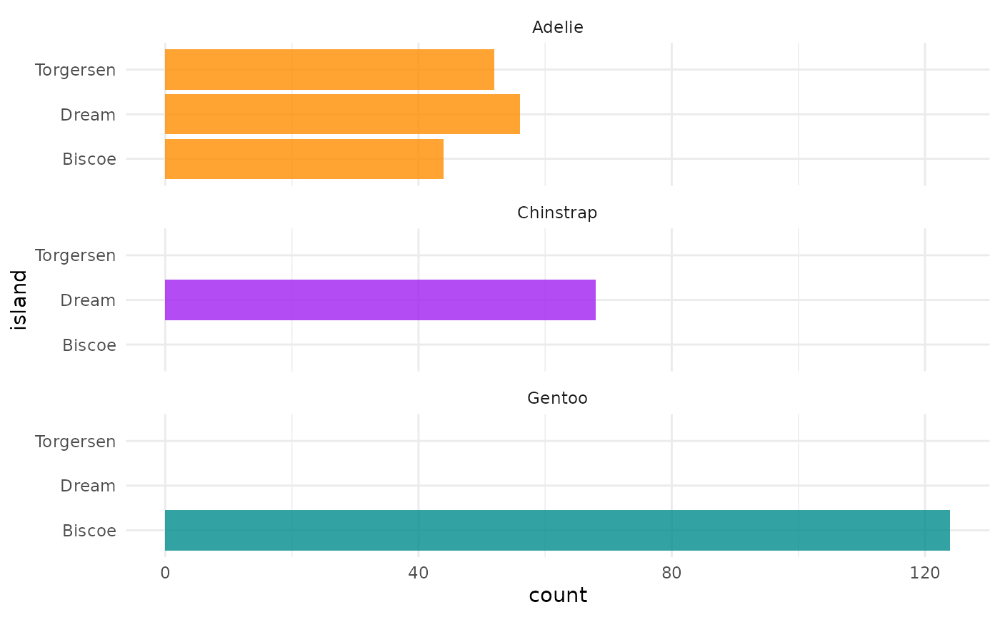
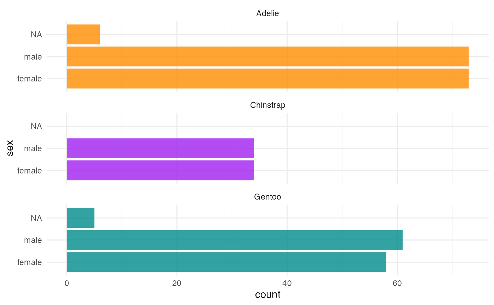
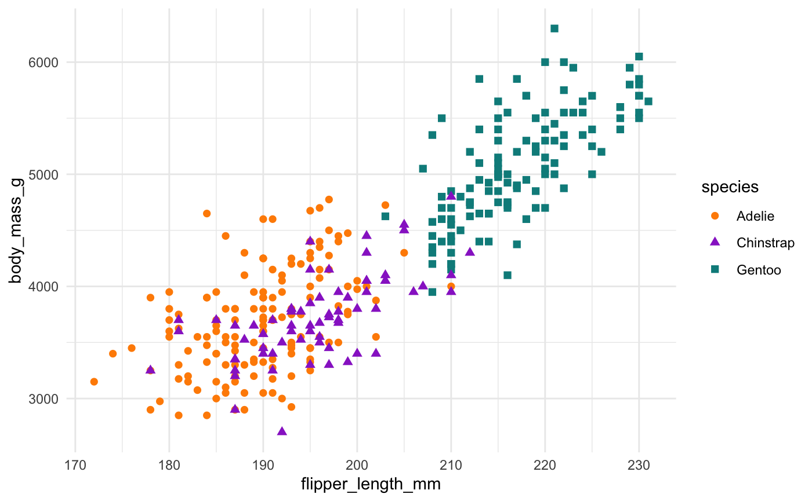
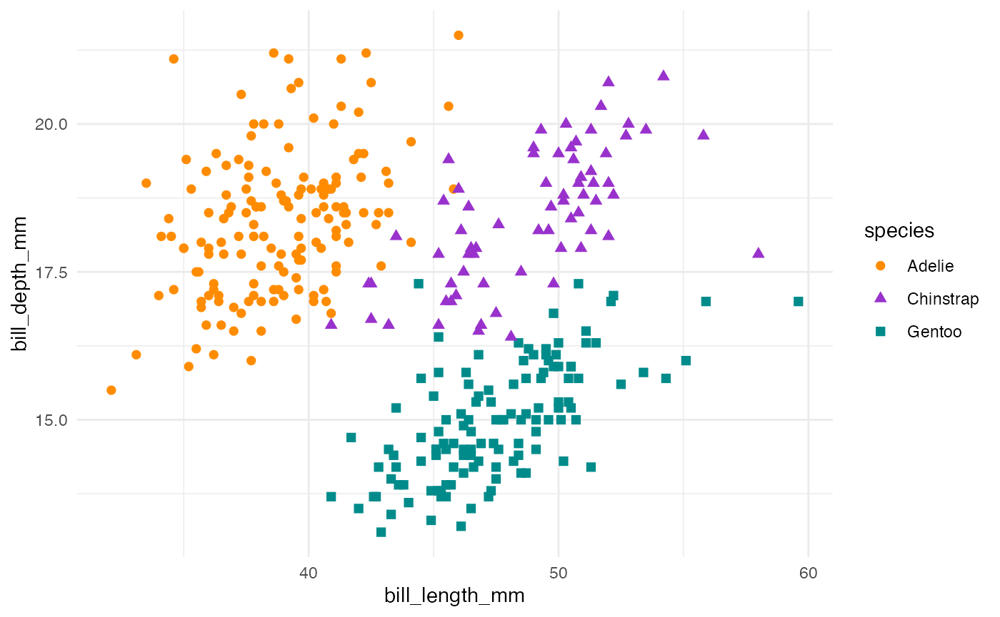
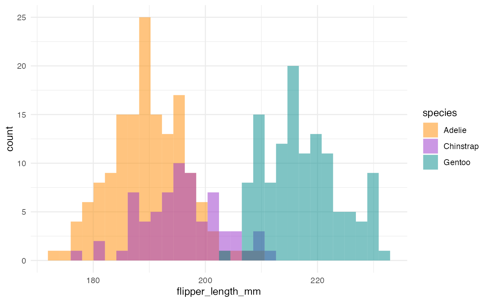

The palmerpenguins R package contains two datasets that we believe are a viable alternative to Anderson’s Iris data (see datasets::iris). In this introductory vignette, we’ll highlight some of the properties of these datasets that make them useful for statistics and data science education, as well as software documentation and testing.

You can download all the palmerpenguins art directly from
vignette("art")
Meet the penguins
The palmerpenguins data contains size measurements for three penguin species observed on three islands in the Palmer Archipelago, Antarctica.

Aside: That’s right, developers – Gentoo Linux is named after penguins!
These data were collected from 2007 - 2009 by Dr. Kristen Gorman with the Palmer Station Long Term Ecological Research Program, part of the US Long Term Ecological Research Network. The data were imported directly from the Environmental Data Initiative (EDI) Data Portal, and are available for use by CC0 license (“No Rights Reserved”) in accordance with the Palmer Station Data Policy.
Installation
You can install the released version of palmerpenguins from CRAN with:
install.packages("palmerpenguins")Or install the development version from GitHub with:
# install.packages("remotes")
remotes::install_github("allisonhorst/palmerpenguins")The palmerpenguins package
This package contains two datasets:
Here, we’ll focus on a curated subset of the raw data in the package named
penguins, which can serve as an out-of-the-box alternative todatasets::iris.The raw data, accessed from the Environmental Data Initiative (see full data citations below), is also available as
palmerpenguins::penguins_raw.
The curated palmerpenguins::penguins dataset contains 8 variables (n = 344 penguins). You can read more about the variables by typing ?penguins.
glimpse(penguins)
#> Rows: 344
#> Columns: 8
#> $ species <fct> Adelie, Adelie, Adelie, Adelie, Adelie, Adelie, Adel…
#> $ island <fct> Torgersen, Torgersen, Torgersen, Torgersen, Torgerse…
#> $ bill_length_mm <dbl> 39.1, 39.5, 40.3, NA, 36.7, 39.3, 38.9, 39.2, 34.1, …
#> $ bill_depth_mm <dbl> 18.7, 17.4, 18.0, NA, 19.3, 20.6, 17.8, 19.6, 18.1, …
#> $ flipper_length_mm <int> 181, 186, 195, NA, 193, 190, 181, 195, 193, 190, 186…
#> $ body_mass_g <int> 3750, 3800, 3250, NA, 3450, 3650, 3625, 4675, 3475, …
#> $ sex <fct> male, female, female, NA, female, male, female, male…
#> $ year <int> 2007, 2007, 2007, 2007, 2007, 2007, 2007, 2007, 2007…The palmerpenguins::penguins data contains 333 complete cases, with 19 missing values.
visdat::vis_dat(penguins)
Highlights
We don’t want to ruin all the fun exploration, visualization, and potential analyses, so below are just a few examples to get you quickly waddling along with penguins. You can check out more in vignette("examples").
Exploring factors
The penguins data has three factor variables:
penguins %>%
dplyr::select(where(is.factor)) %>%
glimpse()
#> Rows: 344
#> Columns: 3
#> $ species <fct> Adelie, Adelie, Adelie, Adelie, Adelie, Adelie, Adelie, Adelie…
#> $ island <fct> Torgersen, Torgersen, Torgersen, Torgersen, Torgersen, Torgers…
#> $ sex <fct> male, female, female, NA, female, male, female, male, NA, NA, …
# Count penguins for each species / island
penguins %>%
count(species, island, .drop = FALSE)
#> # A tibble: 9 × 3
#> species island n
#> <fct> <fct> <int>
#> 1 Adelie Biscoe 44
#> 2 Adelie Dream 56
#> 3 Adelie Torgersen 52
#> 4 Chinstrap Biscoe 0
#> 5 Chinstrap Dream 68
#> 6 Chinstrap Torgersen 0
#> 7 Gentoo Biscoe 124
#> 8 Gentoo Dream 0
#> 9 Gentoo Torgersen 0
ggplot(penguins, aes(x = island, fill = species)) +
geom_bar(alpha = 0.8) +
scale_fill_manual(values = c("darkorange","purple","cyan4"),
guide = FALSE) +
theme_minimal() +
facet_wrap(~species, ncol = 1) +
coord_flip()
# Count penguins for each species / sex
penguins %>%
count(species, sex, .drop = FALSE)
#> # A tibble: 8 × 3
#> species sex n
#> <fct> <fct> <int>
#> 1 Adelie female 73
#> 2 Adelie male 73
#> 3 Adelie NA 6
#> 4 Chinstrap female 34
#> 5 Chinstrap male 34
#> 6 Gentoo female 58
#> 7 Gentoo male 61
#> 8 Gentoo NA 5
ggplot(penguins, aes(x = sex, fill = species)) +
geom_bar(alpha = 0.8) +
scale_fill_manual(values = c("darkorange","purple","cyan4"),
guide = FALSE) +
theme_minimal() +
facet_wrap(~species, ncol = 1) +
coord_flip()
Exploring scatterplots
The penguins data also has four continuous variables, making six unique scatterplots possible!
penguins %>%
dplyr::select(body_mass_g, ends_with("_mm")) %>%
glimpse()
#> Rows: 344
#> Columns: 4
#> $ body_mass_g <int> 3750, 3800, 3250, NA, 3450, 3650, 3625, 4675, 3475, …
#> $ bill_length_mm <dbl> 39.1, 39.5, 40.3, NA, 36.7, 39.3, 38.9, 39.2, 34.1, …
#> $ bill_depth_mm <dbl> 18.7, 17.4, 18.0, NA, 19.3, 20.6, 17.8, 19.6, 18.1, …
#> $ flipper_length_mm <int> 181, 186, 195, NA, 193, 190, 181, 195, 193, 190, 186…
# Scatterplot example 1: penguin flipper length versus body mass
ggplot(data = penguins, aes(x = flipper_length_mm, y = body_mass_g)) +
geom_point(aes(color = species,
shape = species),
size = 2) +
scale_color_manual(values = c("darkorange","darkorchid","cyan4")) 
# Scatterplot example 2: penguin bill length versus bill depth
ggplot(data = penguins, aes(x = bill_length_mm, y = bill_depth_mm)) +
geom_point(aes(color = species,
shape = species),
size = 2) +
scale_color_manual(values = c("darkorange","darkorchid","cyan4"))
You can add color and/or shape aesthetics in ggplot2 to layer in factor levels like we did above. With three factor variables to work with, you can add another factor layer with facets, like the plot below.
ggplot(penguins, aes(x = flipper_length_mm,
y = body_mass_g)) +
geom_point(aes(color = sex)) +
scale_color_manual(values = c("darkorange","cyan4"),
na.translate = FALSE) +
facet_wrap(~species)
Exploring correlations
Also see vignette("pca") for an example principal component analysis.
penguins %>%
select(species, body_mass_g, ends_with("_mm")) %>%
GGally::ggpairs(aes(color = species)) +
scale_colour_manual(values = c("darkorange","purple","cyan4")) +
scale_fill_manual(values = c("darkorange","purple","cyan4"))
Exploring distributions
# Jitter plot example: bill length by species
ggplot(data = penguins, aes(x = species, y = bill_length_mm)) +
geom_jitter(aes(color = species),
width = 0.1,
alpha = 0.7,
show.legend = FALSE) +
scale_color_manual(values = c("darkorange","darkorchid","cyan4"))
# Histogram example: flipper length by species
ggplot(data = penguins, aes(x = flipper_length_mm)) +
geom_histogram(aes(fill = species), alpha = 0.5, position = "identity") +
scale_fill_manual(values = c("darkorange","darkorchid","cyan4"))
Package citation
Please cite the palmerpenguins R package using:
citation("palmerpenguins")
#>
#> To cite palmerpenguins in publications use:
#>
#> Horst AM, Hill AP, Gorman KB (2020). palmerpenguins: Palmer
#> Archipelago (Antarctica) penguin data. R package version 0.1.0.
#> https://allisonhorst.github.io/palmerpenguins/. doi:
#> 10.5281/zenodo.3960218.
#>
#> A BibTeX entry for LaTeX users is
#>
#> @Manual{,
#> title = {palmerpenguins: Palmer Archipelago (Antarctica) penguin data},
#> author = {Allison Marie Horst and Alison Presmanes Hill and Kristen B Gorman},
#> year = {2020},
#> note = {R package version 0.1.0},
#> doi = {10.5281/zenodo.3960218},
#> url = {https://allisonhorst.github.io/palmerpenguins/},
#> }References
Data originally published in:
- Gorman KB, Williams TD, Fraser WR (2014). Ecological sexual dimorphism and environmental variability within a community of Antarctic penguins (genus Pygoscelis). PLoS ONE 9(3):e90081. https://doi.org/10.1371/journal.pone.0090081
Individual datasets:
Individual data can be accessed directly via the Environmental Data Initiative:
Palmer Station Antarctica LTER and K. Gorman, 2020. Structural size measurements and isotopic signatures of foraging among adult male and female Adélie penguins (Pygoscelis adeliae) nesting along the Palmer Archipelago near Palmer Station, 2007-2009 ver 5. Environmental Data Initiative. https://doi.org/10.6073/pasta/98b16d7d563f265cb52372c8ca99e60f (Accessed 2020-06-08).
Palmer Station Antarctica LTER and K. Gorman, 2020. Structural size measurements and isotopic signatures of foraging among adult male and female Gentoo penguin (Pygoscelis papua) nesting along the Palmer Archipelago near Palmer Station, 2007-2009 ver 5. Environmental Data Initiative. https://doi.org/10.6073/pasta/7fca67fb28d56ee2ffa3d9370ebda689 (Accessed 2020-06-08).
Palmer Station Antarctica LTER and K. Gorman, 2020. Structural size measurements and isotopic signatures of foraging among adult male and female Chinstrap penguin (Pygoscelis antarcticus) nesting along the Palmer Archipelago near Palmer Station, 2007-2009 ver 6. Environmental Data Initiative. https://doi.org/10.6073/pasta/c14dfcfada8ea13a17536e73eb6fbe9e (Accessed 2020-06-08).
Have fun with the Palmer Archipelago penguins!